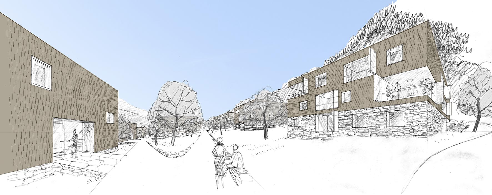

maqueta de situación

plano de situación

planta de acceso

tipo 1/2/3
plantas viviendas

vista exterior

vista desde la loggia
ESTRATEGIA URBANA
La propuesta para el área residencial de Pralawisch en Balzers busca la integración del proyecto en el entorno adecuándose
tanto a la escala doméstica del mismo, de viviendas unifamiliares, como a la pendiente del solar y la presencia de huertos
y zonas verdes.
Para ello se distribuyen por el solar tres tipos de cuerpos cúbicos de tres plantas en tres tamaños diferentes, posicionándolos
de tal manera que se garantiza la máxima visión del paisaje y la mínima interacción visual entre ellos.
Esta intención está apoyada por la diferente orientación (en todas direcciones) de los distintos espacios libres (terrazas
y loggias) de cada una de las unidades de vivienda. Las zonas verdes se deslizan entre los volúmenes.
La unión entre las unidades habitacionales y la posible conexión en caso de emergencia y carga y descarga se produce
a través de un camino, construido siguiendo las curvas de nivel.
ACCESIBILIDAD
Se propone un parking subterráneo proyectado en dos fases (requerido por el enunciado del concurso) accediéndose a la
primera fase desde la carretera y a la segunda fase a través de la pradera.
Para integrar las entradas y salidas a dicho parking se utilizará de nuevo la topografía del terreno, por lo que el
aparcamiento está, como consecuencia de esta pendiente, escalonado también.
A excepción de uno de los bloques situado en la zona norte del solar, todas las viviendas están conectadas con el parking
directamente a través de los núcleos de comunicación.

MEZCLA DE TIPOLOGÍAS DE VIVIENDA
Debido a las diferencias volumétricas entre los tres cuerpos y la posibilidad de orientar los espacios en las distintas
direcciones, se plantean una amplia gama de viviendas de diversos tamanos que se entremezclan entre sí, creando multitud
de situaciones programáticas.
Los distintos volúmenes pueden contar con desde 1 hasta 3 viviendas por planta.
ESPACIOS EXTERIORES
Las terrazas y loggias privadas con sus diferentes orientaciones y el desplazamiento de los cuerpos desalineados entre si, en relación con los espacios verdes generan una sensación espacial amplia, de escala doméstica en armonía con las viviendas unifamiliares colindantes. Las llogias cuentan además con la posibilidad de cerrarse, mediante ventanas correderas de cristal, para resguardarse del viento o las inclemencias del tiempo, haciéndolas útiles durante todo el ano. En los espacios verdes circundantes, se proyectan también parques infantiles y zonas de descanso.